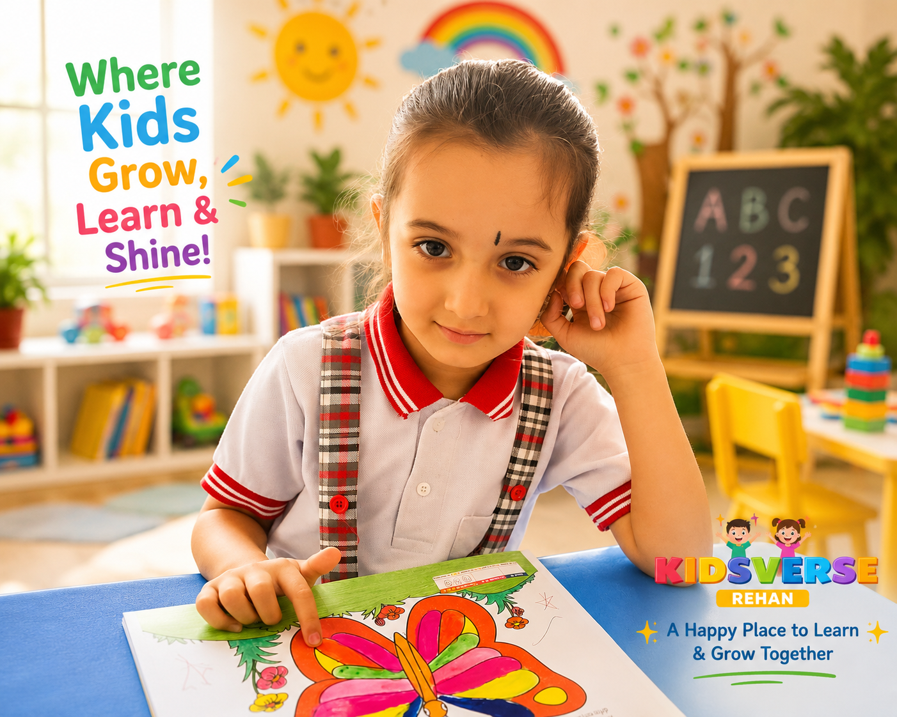
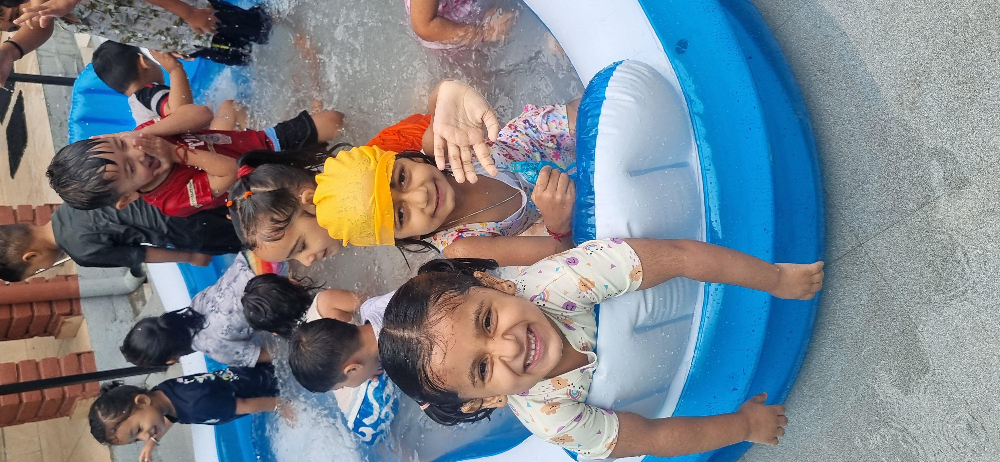
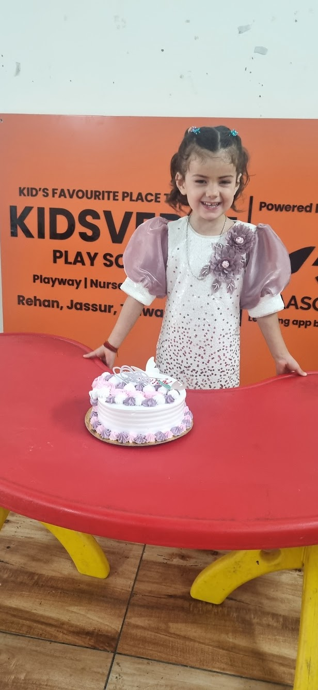

Kidsverse UKG Programme
Prepared, expressive and ready for Grade 1.
UKG strengthens reading readiness, writing confidence, number sense, environmental awareness, discipline and communication so children enter Grade 1 with confidence.

UKG foundation
The final preschool year shapes formal school confidence.
UKG children are ready for more structured academic exposure. Kidsverse combines phonics, writing, maths, EVS, communication and activities so children build confidence without losing joy.
Learning areas
What children learn in UKG.
Focused preparation for Grade 1 with strong foundational skills.
Reading readiness
Phonics, blending, sight words, picture reading and sentence exposure.
Writing practice
Letters, words, short sentences, neatness and notebook habits.
Math confidence
Counting, number names, comparison, addition readiness and patterns.
Hindi foundation
Akshar recognition, matra exposure, vocabulary and oral practice.
General awareness
Family, helpers, nature, festivals, safety and community awareness.
Communication
Speaking, show-and-tell, stage comfort and peer interaction.
A day at Kidsverse
Structured learning with room for creativity.
UKG routines balance written practice, oral confidence and activity-based learning.
Conversation, calendar and value talk.
Phonics, reading and vocabulary.
Numbers, patterns and workbook tasks.
Theme learning and oral practice.
Art, craft or group task.
Children share what they learned.
By the end of UKG
Your child is ready for Grade 1 routines.
Recognizes words and soundsWrites with better controlUnderstands core numbersSpeaks in simple sentencesCompletes classwork neatlyShows school discipline


Parent questions
Common UKG questions.
Does UKG prepare for Grade 1?
Yes, UKG focuses on reading, writing, maths, routines and classroom confidence.
Will my child learn Hindi too?
Children receive age-appropriate Hindi foundation through recognition and oral practice.
How do you avoid pressure?
Practice is structured in short blocks with activities, encouragement and teacher support.
UKG admission enquiry
Help your child enter Grade 1 with confidence.
Share details and we will guide you on readiness, class fit and visit timing.